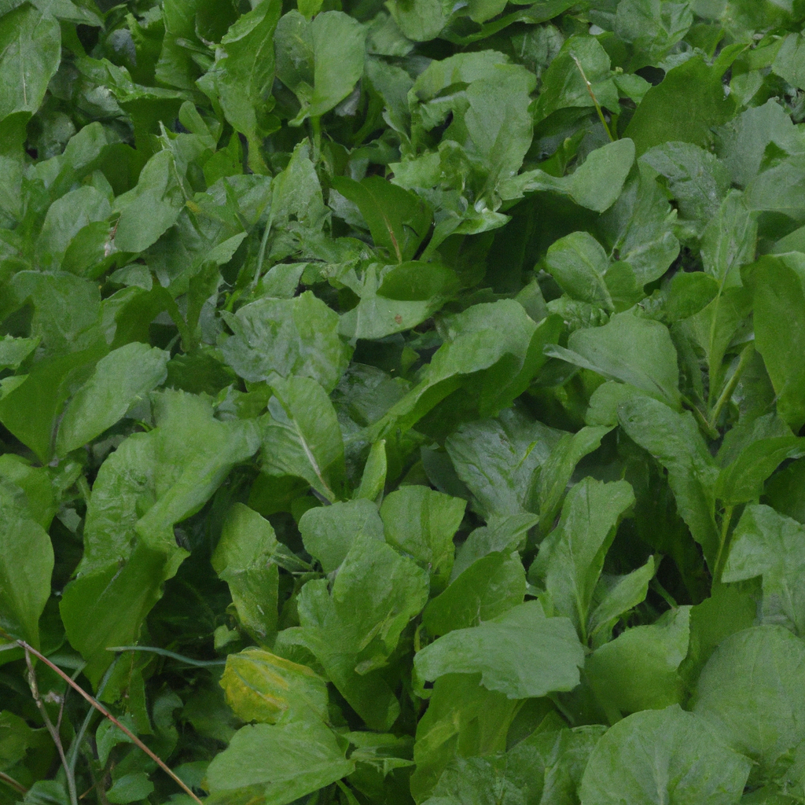

Mustard Greens
Mustard greens are an excellent source of nutrition that has been used for centuries in many different cultures. They are an excellent source of vitamins A, C and K, as well as calcium, iron and magnesium. Mustard greens are also a great source of dietary fiber and can help reduce cholesterol levels in the body. Furthermore, consuming mustard greens has been linked to improved digestion and can help to prevent various types of cancer.
Transportation technology has made it possible to access mustard greens from all over the world. This means that those living in areas where mustard greens are not traditionally grown can enjoy the great nutritional benefits of this vegetable. With the help of modern technology, farmers can now cultivate and harvest mustard greens more efficiently, making them available to more people.
Mustard greens are a great addition to any healthy diet. They are full of essential vitamins and minerals, and can help to improve digestion and reduce cholesterol levels. Transportation technology has made it easier than ever to access this beneficial vegetable from all over the world. So why not give mustard greens a try and see what health benefits they can offer you?